收录于合集
简
张清敏
北京大学国际关系学院教授
李敃窥
北京大学国际关系学院 2010 级外交学专业博士研究生
本文经国政学人公众号首发，转载请注明来处！
摘要
在近年来兴起的国际关系研究文化热中，国内有不少学者提出中国传统文化将成为“中国行为的根源”和“思想源泉”。本文选择反映马克思主义、中国传统文化和西方对外行为指导思想的三类不同关键词作为指标，以《人民日报》为文本分析依据，揭示新中国成立以来这三种思想影响中国对外行为的特点和变化趋势: 传统的政治意识形态对中国对外行为的影响在显著下降，但中国传统文化并没有取代它的地位而成为中国对外行为的思想根源。相反，作为西方国家对外政策指针的国家利益在中国对外行为中越来越重要了。中国文化热的兴起反映了中国在融入国际社会过程中观念转型所面临的困难，代表了建设有中国特色国际关系理论新的尝试和努力方向，是全球化背景下一种文化自觉的表现。
关键词
中国外交 ； 马克思主义 ； 中国文化 ； 国际规范 ； 中国特色 ； 国际关系理论 ****
早在国际关系在国内成为学术研究的一个领域，学界开始提出要建设有中国特色的国际关系理论之初，资中筠先生就曾撰文指出，“中国外交特色，其根源只能从中国文化传统中去找，而不能主要用马克思主义意识形态来解释。”近年来，随着中国对全球经济影响力的增大，怎样理解中国行为的思想根源，更成了国际关系研究中的热点问题之一。有学者撰文探讨中国外交的思想“底色”，更多的学者则试图找出中国文化的某些内涵与当代中国外交某些方面之间的联系。 有媒体称，中国文化已经成为当代“中国外交的精神源泉”，也有学者指出“传统思想将成为中国外交政策圈的主流思想”，将成为“中国行为的根源”。甚至基辛格也认为，中国的传统思想将比任何外来的意识形态都更可能成为中国外交政策制定中的主导思想。 作为一个正在崛起的社会主义大国，其对外行为是以马克思列宁主义为指导，还是以传统的中国文化为指导，抑或按照以西方历史、文化和传统为主要基础的当代国际规范和惯例去做? 对这些问题的回答不仅具有重要的学术意义，且因其关系到崛起后中国的对外行为方式而具有重要的政治含义。
中国文化“已经成为当代中国外交的精神源泉”，或“将成为中国外交政策圈的主流思想”，“将成为中国行为的根源”等，这些讨论和说法本身暗含一个意思，即中国文化或传统思想过去并非中国外交的思想源泉，至少不曾是中国对外行为的主要根源。此外， 如果说中国外交越来越中国化 了，或越来越受中国文化影响了， 那么这个中国化的过程中去掉的是什么? 也就是说中国对外政策过去的主要指导思想或根源是什么? 是来源于西方的马克思主义列宁主义，还是以西方文化和历史传统为基础的当代国际行为规范? 这样对立的划分似乎并不科学和严谨，但却是学者们在提出上述观点时的逻辑基础。与此相关的问题还包括: 如果中国对外行为根源的发展趋势并非中国文化，那么又是什么? 又如何解释当今中国国际政治研究中的文化热呢? 本文拟对此予以求证，以期找出一个客观的答案。
一
要回答这些问题， 首先需要理清本文与其他有关中国文化与中国外交关系的相关研究的关系。 国际政治中文化热的兴起与亨廷顿的“文明冲突论”有着密切的关系，而从中国传统文化的视角理解中国外交这种研究思路的兴起，则与任职于哈佛大学的加拿大学者江忆恩关于中国战略文化的研究不无关系。江忆恩基于对中国古代典籍和明朝个案的实证分析，提出了中国战略文化是极端现实主义( hard real- politik)的观点。 在“中国威胁论”抬头的时候，他的研究产生了中国人不愿意看到的影响，引发国内不少学者广泛的关注和回应。这些回应不管在方法上是否与江忆恩相同，结论几乎全都不同于江忆恩的结论，即基本上都是尽力从积极或正面的角度找出中国文化中的和平要素，并试图论证它们对当代中国外交的积极影响，为中国当代的和平外交提供思想基础和支撑。 学界对这一课题的研究在数量上仍然在增加，中国政府的官方文件也明确指出，“中国实行防御性的国防政策，还渊源于中国的历史文化传统。”中国“有爱好和平的传统。中国古代思想家曾提出过‘亲仁善邻’的思想，反映了自古以来中国人民就希望天下太平、同各国人民友好相处，这种思想表现在军事上，就是主张用非军事手段来解决争端、慎重对待战争和战略上后发制人”。 近年来，从中国古代典籍中探寻中国外交的思想根源成为当下学界又一个新的潮流，但也有海外的中国学者从宋朝和明朝皇帝与周边国家打交道的历史，从实证角度证明，影响中国领导人选择战争与和平策略的不是儒家文化，而是客观力量的限制和机会。关于文化如何影响外交的研究成果很多，观点各异。本文作者也曾尝试对此进行过类似的探讨，最近邢悦以美国为例比较系统地探讨了文化对美国外交政策的影响。本文不拟再加入这一争论，因而不属于从中国文化角度解释或分析中国对外行为或对外关系的研究，而是希望从实证的角度找出一些指标，看看中国对外行为中的中国文化因素是增加了，还是越来越淡化了。
在中国学界不断强调要建设有中国特色的国际关系或外交学理论的时候，西方国际关系理论在中国国际关系学界掀起了一波又一波的高潮，有些理论甚至超过其在西方的影响。但是根据国内就理解理论这个概念过程中对其指导实践作用的强调，这个需要建立起来的具有中国特色的理论应该与西方的国际关系理论是有所不同的，因此学者在强调建设具有中国特色国际关系理论的时候尽可能淡化西方的影响， 一般指出这样的理论应该有三大思想渊源: 近现代革命思想和实践( 或马克思主义) ; 天下观念和朝贡体系的实践( 或中国传统文化理念) ; 改革开放思想和实践( 或中国特色社会主义理论) 。 换句话来说，一是马克思列宁主义关于国际关系的思想。作为一个社会主义国家，中国政府一贯强调马克思主义在中国政治社会生活中的指导作用，这不仅体现于历届中国共产党代表大会的政治报告中，而且还在中华人民共和国宪法中得到明确的规定。二是具有悠久历史的中国文化传统，包括中国在历史上处理与其他国家关系的做法和惯例。三可以被看做当今中国处理对外关系的经验积累，或者说中国处理与当代国际社会以及国际社会主流的基本原则、规范和惯例实践。虽然当代国际关系的规范中有新中国成立后的贡献，如和平共处五项原则，但总体上是以西方文化和观念为基础的，历史上形成于威斯特伐利亚和会之后，被称为威斯特伐利亚体系。新中国成立后的对外关系的历史，从观念上看实际上就是处理与这个体系关系的历程。 三者之间本无矛盾和冲突，而是具有很大的相互包容性，但是，有关中国文化将成为中国外交根源这样判断的内在逻辑实际上把它们对立了起来。
为了回答本文提出的问题，本文选择《人民日报》作为文本分析的依据。因为《人民日报》是中国共产党的中央机关报，直属中国共产党中央领导，其内容反映的都是中国政府的官方观点和看法，因而应该被看做理解包括中国外交在内的中国社会政治生活最为权威和系统的材料。本文拟选择三个指标考察以上三个方面对中国外交影响变化的状况: 首先，看看它们在《人民日报》上出现的规律是否与中国对外关系或对外行为的特点具有一致性; 其次，通过比较探寻在当今中国外交的底色中，这三种“色素”成分在中国对外行为中的深浅和变化态势，看看哪一种“色素”在上升，哪一种“色素”在下降，从而回答哪一种因素正在成为当代中国对外行为的主要思想根源。
二
只要谈到建设有中国特色的国际关系理论，国内一些学者就言必称马列。在完成本文的过程中，笔者借阅了冷战结束以来国内出版的所有冠名研究马克思主义国际关系理论的著作和论文集，但非常遗憾的是，并没有发现哪一本著作对马克思主义国际关系理论有过全面和系统的阐述，甚至没有笼统的概括; 而往往都是以当今政策语录式地僵硬解读马克思主义，把毛泽东或邓小平的思想或当代中国的政策贴上马克思主义的标签。转而查阅西方关于马克思主义研究的成果和国内高校有关政治理论教材， 笔者拟对马克思主义国际关系理论做出以下总结: 第一，强调经济基础的决定性作用; 第二，根据经济状况将群众分为阶级; 第三，用阶级分析的方法分析国际问题; 第四，强调无产阶级的利益而非民族国家的利益; 第五，在国际问题上主张全世界无产阶级联合起来，突出无产阶级国际主义的指导原则等。因此，本文拟分别以“阶级利益”和“无产阶级国际主义”等类似的词语为关键词，检索它们在《人民日报》出现的状况，探求马克思主义在中国官方语言中出现的规律和状况，希望能够揭示马克思主义在中国对外关系中的影响状况和变化趋势。
找出一两个关键词作为中国文化的代表，探讨中国文化对中国对外行为的影响及其变化并非易事。中国文明史很长，中国文化的内容也相当复杂，其核心内核是什么，或者说在丰富的多元文化中，哪些文化因素对中国的对外关系产生了影响，如何说明和证明这些因素对中国对外关系的影响等，是回答本文提出问题的关键。归纳海内外研究中国文化学者的众多成果，似乎可以找出他们对中国文化核心内核的共识。早期对中西文化进行比较研究的学者梁漱溟在区别中国文化与西方文化之差异时指出，在中国“人一生下来，便有与他相关系之人( 父母，兄弟等) ，人生且将始终在与人相关系中生活( 不能离社会) ，如此则知，人生实存于各种关系之上。此种关系，即是……伦理关系，即是情谊关系，亦即是其中相互之间一种义务关系”。一直致力于文化心理学本土化研究的台湾学者也非常重视“中国文化中或在中国人的日常生活里人际关系的重要性与突出性”。 其代表人物黄光国在实在论的基础上，构建出了“人情面子”的理论模型，并以此为基础分析中国的儒家文化传统，提出了“华人的关系主义”等系列性论点。赵汀阳从哲学的角度提出以儒家思想发展出来的“方法论的关系主义”作为基本单位来分析人类行为和价值观。 国际关系学家秦亚青则指出，“ 如果说西方个体本位的社会性质的核心理念是‘理性’，那么中国社会文化的一个根本理念则是‘关系’ 。”他将中国社会文化中的“一个核心元素——关系性——挖掘出来，以它为硬核，构建一个理论轮廓”，并以此提出了过程建构主义“关系本位”的基本假定。
翟学伟认为，“中国人的关系和权力在理论和实践上有一个基本的特征，即它们在时间和空间上都是无限延伸的: 首先血缘关系是由遥远的祖先和无尽的后代构成的，所谓‘传宗接代’……是没有尽头的; 其次地缘关系也可以逐步放大，直至天下。”王缉思指出了这种关系导向的文化特征在中国外交中的表现。他说，“政治在中国一般被视为一整套权力关系，……建立在人治基础上的‘关系学’一直都比西方发达。中国人观察国际政治，很容易理解处于无政府状态的国家间关系的不确定性和不稳定性，较善于分清不同时期、不同问题上的‘敌我友’，利用矛盾，争取多数。”前者主要表现为在对外关系中划清敌友关系，以敌划线，或明确宣布站在那一边，于是出现过外交上“以美划线”和“以苏划线”的局面。除了在阐述与社会主义国家之间关系的时候喜欢说是好同志、好朋友、好兄弟外， 与非社会主义国家的关系中也往往以亲戚关系相称。 然而，一旦关系不能摆正，则可能产生严重的外交后果。如毛泽东曾对苏联驻华大使发火说，“我们对米高扬不满意。他摆老资格，把我们看作儿子。”当毛泽东认为中苏之间的“兄弟党，只不过是口头上说说，实际上是父子党，是猫鼠党”的时候，双边友好关系就难以维持下去了。当然，毛泽东也坦陈“这种父子关系不是欧洲式的，而是亚洲式的”。
在中国社会文化的各种关系中，“朋友关系是因人与人的亲密性或互惠性链接的，由于它超越了血缘和地缘的限制，实现了更多的个体间的连接，便可以做到四通八达……关系没有边界，会引发处于关系网络中的权力也无法限定，它是扩散的，广泛的，可以转移的以及疏通的。”在现实生活中如果说某人是老朋友，就表明相互间充满深厚的情谊。如温总理在2010 年访问欧洲期间对欧洲企业家的演讲中提出:“当欧元区一些国家发生困难时，中国没有袖手旁观，稳定持有并购买欧元债券，在最困难时候帮助了冰岛、希腊、西班牙、葡萄牙、意大利。今后我们还会继续支持，帮助一些国家度过难关。在座的企业家心里很清楚，中国够朋友。”在国际上如果表示某人不够朋友或不是朋友，在外交上则预示着中国对这个人的不认同，或意欲与之撇清关系。如在西方开始对利比亚的卡扎菲政权进行打击、利比亚内战爆发后，中国媒体或学者在访谈中就明确表示卡扎菲“不是中国人民的老朋友”。这种说法对具有与我们不同文化背景的人来说意义并不大，但在中国人眼中却是一个非常严肃的问题。
虽然可以说我们的朋友遍天下，但西方人对朋友的理解有所不同。 根据中文的理解，朋友就是“彼此有交情的人”，或“交谊深厚的人”。 但在西方语境中， 朋友的意思有着明显的不同，除了指“在自然喜好和理解上具有共同感受的人”外， 还指“一个帮助者、支持者、建议者” ，“一个并非敌人的人或不用害怕的人”，“在公开场合谈话或提到时的礼貌用语”，并非一定要有感情或交情。 如在第三轮中美战略与经济对话会议上，美国国务卿克林顿借用朋友一词形容中美关系说，“就像任何两个大国一样……我们之间存在着分歧。就像朋友那样，我们诚实而坦率地讨论我们的分歧。”她借朋友一词提出美国对中国人权方面的批评。“第一个能讲流利中文”的西方国家领导人，被称为“对中国当今的政治、历史和社会文化有相当深的了解”的澳大利亚总理陆克文，访华期间在北大演讲时大秀了一把他对中国文化的理解。但是在谈到与中国关系的时候，却没有简单地使用好朋友、好兄弟，而表示澳大利亚愿和中国做敢于向对方说出不同意见的“诤友”。因此“朋友”是一个可以代表中国文化中影响相互关系的最具代表性的词。
与关系紧密相连的是人情与面子。翟学伟认为，“‘关系’是一种对人的特定链接方式的表达，往往同‘人情’和‘面子’等混合使用，或反过来需要通过人情与面子的研究来理解它的含义。”感情在中国文化中不仅是客观存在的，也是超越利益的。在家庭关系中，夫妻之间、兄弟之间、与父母之间的关系都超越了世俗的利益或金钱关系。在中国文化中，作为家庭关系投射的政治也被看做“伦理之间的事，讲情谊而不争权利，用礼教以代法律。是曰政治伦理化”。为人处世强调“既合乎理性又合乎人情的、合情合理的‘情理交融的人性心理’。” 因此，中国在外交上会很在意照顾和尊重对方的感情以增进双边关系，而抗议别人伤害我们的感情，因为伤害感情则会严重损坏双边关系。 所以，我们在外交上往往抗议别人伤害我们的感情，却很少抗议别人损害了我们的利益。感情既是关系的体现，又是影响和决定关系的重要因素。因此，本文拟以最常用的“朋友”关系和反映关系的“感情”作为中国文化的象征，对《人民日报》进行检索分析，探寻中国传统文化因素“楔入”中国对外行为的表现方式，考察中国文化影响的状况和变化趋势。
当代国际关系的基本原则和规范的核心价值观是以西方文化为基础的。当今国际体系的众多原则是随着民族国家的产生而产生的，其文化背景是文艺复兴后兴起的人的解放和“个人觉醒”。 它“肯定了欲望”和个人的“权利观念”。 利益是西方对外关系主要( 如果不是唯一) 的驱动力。 19 世纪英国首相帕麦斯顿的名言——“国家没有永远的朋友，也没有永远的敌人，仅有永远的利益”，被一代又一代西方政治家援引为国家对外政策的指导思想。现实主义大师摩根索也指出，“以权力界定的利益概念是帮助政治现实主义找到穿越国际政治领域道路的主要路标。这个概念把试图理解国际政治的推理与有待于理解的事实联系了起来。”正是这个概念让政治成为独立的领域，而与其他学科分开。如果将这种行为方式与中国传统文化进行比较，就可以更清楚地看出文化的不同对国家对外政策所产生的不同影响。孔子所主张的“君子义以为上”，“不义而富且贵，于我如浮云”等，至今仍然是中国人的处事原则之一。他还以重义还是重利作为区别君子与小人的标准，说“君子喻于义，小人喻于利”。 梁漱溟指出，西洋文化“合于现实”，中国文化“不免理想多于现实” ，“现实不外两个字: 一是利益之利，又一是力量之力。”赵汀阳也颇有同感地指出，“曾经支配世界的英国和正在支配世界的美国……从来都只考虑自己的利益。”
西方对中国文化中非常重视的感情却颇不以为然，尤其是在对外政策上。美国历史学家托马斯·贝利曾说，“自身利益是对外政策的主要动力……感情是嬗变的，而自身利益是永恒的。”曾经在巴尔干战争( 1912—1913) 和一战期间担任战地记者的美国诗人保罗·莫厄尔也曾有类似的表示。他说，“政策如果不是建立在牢固的国家利益基础之上，而是建立在诸如偏见、毫无根据的恐惧、感伤情感……的意识形态基础上，就如同建立在流沙之上。”一个对中美关系进行比较的学者也指出，“像大多数启蒙后的西方人一样， 美国人倾向于把他们的行为说成完全是由理性和开明的自我利益——强烈地否认是由‘非理性’的情感所驱使。相反，中国人则倾向于把他们的行为说成是由诸如同情和仁慈的感情——而会极力否认是由‘自私’的利益所驱使的 。”例如美国总统奥巴马发表全国电视讲话为美国干预利比亚的军事行动进行辩护时，称“阻止一场潜在的大屠杀发生符合美国的国家利益”，并且在短短六千字的讲话中六次提到利益。白宫发言人卡尼在拉登被击毙后答记者问时说，美国政府一直就是否公开有关照片进行评估，以评判在“敏感环境中”公开这些照片是否符合美国利益。 似乎任何外交政策只有说符合美国利益才能得到美国人民的支持。因此，本文以“国家利益”作为当今西方国际关系准则的代表，并以此为关键词寻求这一观念在中国对外关系中的表现状况和发展趋势，进而探讨其对中国对外行为的影响。
三
（由于后台过审原因，以下为图片）
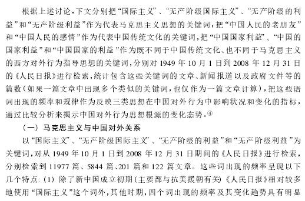
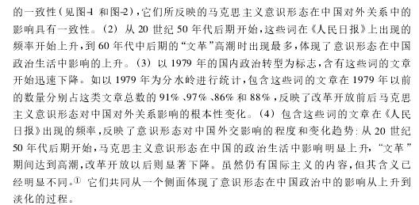
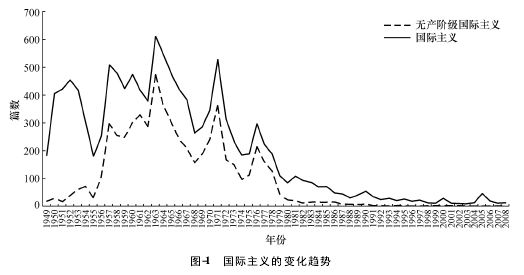
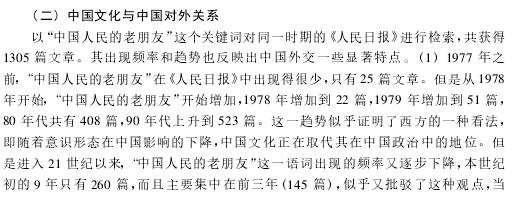
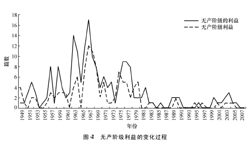
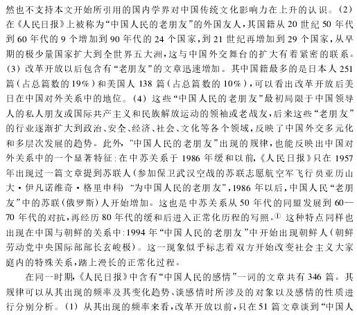
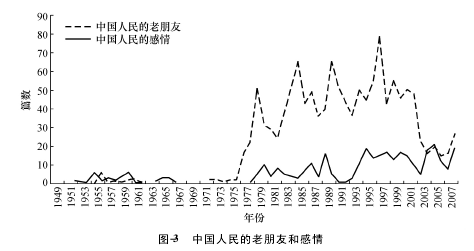
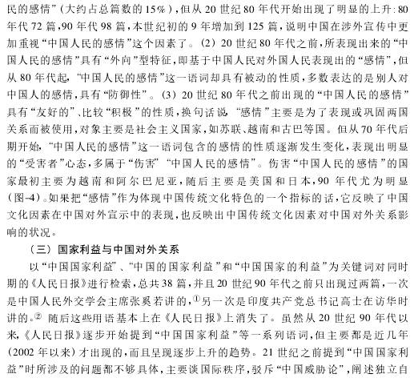

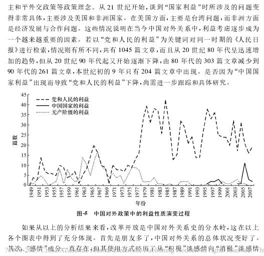
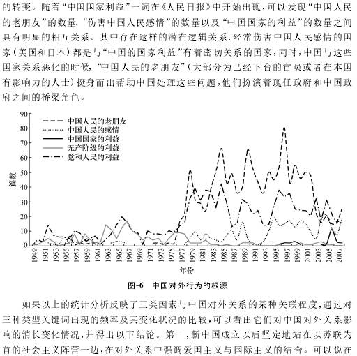
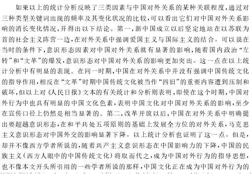
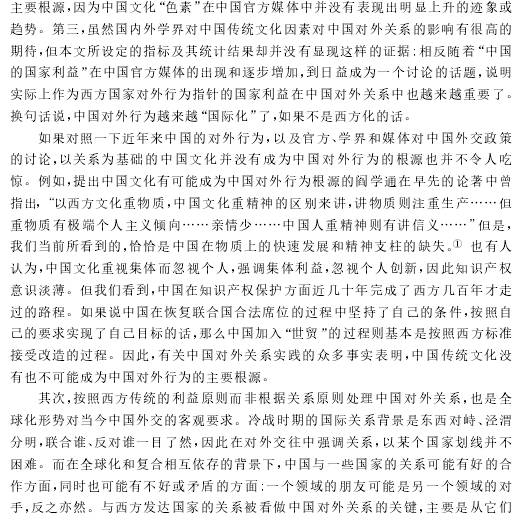
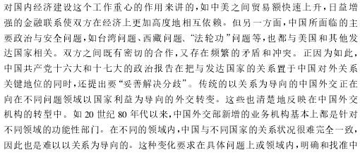
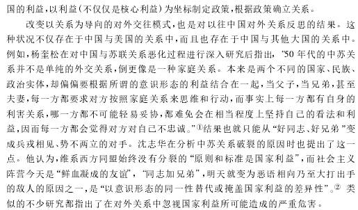
四
如果中国对外行为的方式方法越来越与当今主流国际社会类似或一致，而非越来越按照中国传统文化行事，那么为什么在中国的国际关系研究中会出现当前的文化热? 为什么会有人不断提出中国传统文化将成为中国对外关系的根源呢? 原因是多方面的。冷战结束后，在传统的国际关系分析模式不能解释国际政治新现象的情况下，国际上有不少学者试图从比较文化的视角对国际关系和国别外交进行研究，寻求一种新的理论分析模式，这是国际大背景。从中国方面看，这种现象的含义和原因更是复杂和多方面的。
首先，这一点反映出中国在融入国际社会过程中观念转型所面临的困难。 以前我们在外交工作上很少谈国家利益，既有中国传统文化的原因，也有马克思主义意识形态的考虑。随着改革开放的深入发展，这种状况在实践中早已开始发生改变。早在 1989 年邓小平在与美国前总统尼克松谈话时就明确表示，“考虑国与国之间的关系主要应该从国家自身的战略利益出发。着眼于自身长远的战略利益，同时也尊重对方的利益。”他还明确告诉尼克松，“我们都是以自己国家利益为最高准则来谈问题和处理问题的。”近年来，虽然中国在对外关系中开始谈国家利益了，但是至今仍然犹抱琵琶半遮面。我们把涉及领土主权的问题都看做核心利益，是不容许侵犯和威胁的。好像只有核心利益是利益，至于在其他方面的利益，应该实行不同的原则。对比其他国家，特别是西方国家，从来没有什么核心利益与非核心利益之分，只要是国家利益都是外交政策应该予以维护的。要么不谈利益，要么就是核心利益，这种做法导致了不少的误解。基于此，我们在外交上应该明确中国不同形式和方面的利益，并以利益为指针制定政策。如果利益明确了，政策就有了方向。如果政策是根据利益制定的，在内更容易赢得支持，在外更容易得到理解; 在此基础上形成的政策也更可信、更稳定，更可以预期。
其次，国际关系研究中的文化热，反映了中国学者在寻求建设有中国特色国际关系理论过程中的一个新的尝试和努力方向。 在呼唤建设有中国特色的国际关系和外交理论的过程中，中国国际关系学者面临的困境是: 一方面强调马克思主义的指导，但在现实生活和中国外交实践中，其影响的确在不断下降，因此至今也没有弄清马克思主义国际关系理论的主要内容是什么，与当代中国外交有什么关系; 另一方面，引进、讨论、运用西方国际关系理论几乎主导了当代中国国际关系的研究，但出于可以理解的原因，又不愿或不敢承认这些理论与当代中国外交有任何联系，在建设自己的理论时总是试图撇清与它的关系。在这种困境中孜孜以求、苦苦探索三十多年以后，仍然没有找到一套在外得到国际认可、在内形成共识的中国的国际关系理论，因此就转而尝试在更古老的中国传统中寻求新的突破。这一点阎学通在其主编的《王霸天下思想及启迪》序言中讲得非常明白: “自 20 世纪 80 年代后期以来，一些中国同仁提倡建立中国的国际关系理论或是国际关系理论中国学派。然而，30年来的现实是，倡议者不绝，但却没有任何思想和理论获得‘中国理论’或‘中国学派’的名称。”他希望“通过重新挖掘中国先秦时期的国家间政治思想，为中国学者丰富现有国际关系理论提供传统思想资源”。但是，正如该书中所谈到的，当今中国与先秦时期有很多区别。笔者认为，最为关键的是，我们今天并没有能够产生先秦诸子百家多元思想的国内环境，今天的国际与当时的国际( 天下) 不仅观念不同，实际环境更存在很大差异: 先秦诸国的文化在本质上是类似的，而我们今天所面临的是完全不同于“天下”、在“天下”以外的文化。更为重要的是，现代意义上的中国外交只是百余年的事，在时空上也存在巨大的隔阂。如果本文的结论能够站得住的话，这一新的方向和努力似乎与当代中国外交实践的发展是背道而驰的。或许西方国际关系或外交学理论产生的环境能给我们提供更多值得思考的东西。西方国际关系理论的产生往往发生在国际社会大动荡和大调整后，外交政策理论更多的是建立在对负面或失败教训总结的基础之上，而中国学界对中国外交和对外关系的研究，仍然停留在仅仅是从积极的角度概括其正面经验的阶段。
第三，最有说服力的解释来自文化界，即中国国际关系研究中的文化热，是全球化背景下强调自我意识和自我认同的一个必然要求，是全球化背景下一种文化自觉的表现。 乐黛云指出，“文化自觉不仅是理解与把握自己文化的根和种子，而且是要按现代的认知和需要来诠释自己的文化历史……在经济全球化的今天，文化自觉还有一层非常重要的内容，就是要在多元文化的背景下找到民族文化的自我，知道新语境里中华文化存在的意义，了解中华文化可能为世界的未来发展做出什么贡献。”“‘自知之明’是为了加强文化转型的自主能力，取得适应新环境、新时代对文化选择的自主地位”，是“明白它的来历、形成过程、特色及发展趋向”。这种自觉“不带任何‘文化回归’的意思，不是要‘复归’”。也就是说，文化的“自知之明”一方面“要充分认识自己的历史和传统，认识自身文化延续下去的根和种子”; 另一方面，“要做到这一点，就必须向当代文化和他种文化学习。”
任何文化都是在不断吸收外来文化的过程中充实、丰富和发展的。所谓的中国传统文化，也是在诸子百家特别是儒道思想不断吸收外来的佛教以及近代包括马克思主义在内的西方文化内涵的基础上不断丰富和发展的。面 临全球化的形势，中国当代文化的发展正在经历一个新的转型阶段。中国人的行为在经历中变迁，比以往任何时候都复杂。 正如《人民日报》最近一篇报道指出的，“讲人情、论关系在中国源远流长，这跟历史、文化等都有关系，短时间内很难改变……在社会转型期，有更多的真空地带让人情可以被当作交易的筹码……给‘无权无势’、没‘关系’、没‘背景’的普通大众带来更多焦虑。”同时我们也看到，被梁漱溟认为是“我以为变，彼以为常”的“亲自异居，几为定例; 夫妇离合，视同寻常”的西方生活方式，在中国也已经司空见惯。 中国的对外行为也越来越复杂了，一方面我们越来越明确地强调国家利益在对外政策中的指导作用，另一方面，我们在对外关系中仍然强调，“中国永远站在第三世界一边，中国永远不称霸，中国也永远不当头”，强调中国传统文化的作用和影响。一方面为自己以前所未有的速度融入国际社会而自豪，信誓旦旦地承诺按照国际规范办事，努力与国际接轨; 另一方面强调中国文化的回归和中国传统文化的指导作用 ……中国外交正处于走向国际和回归自我的十字路口，中国向何处去，如何去，也许只有了解我们的时空背景，才能在融入世界后记住我们是谁。这才是理解当今中国对外行为思想根源的根本。
文章载于《外交评论》2011年第4期
筛选： 汪乐乐 编辑： 敖遊